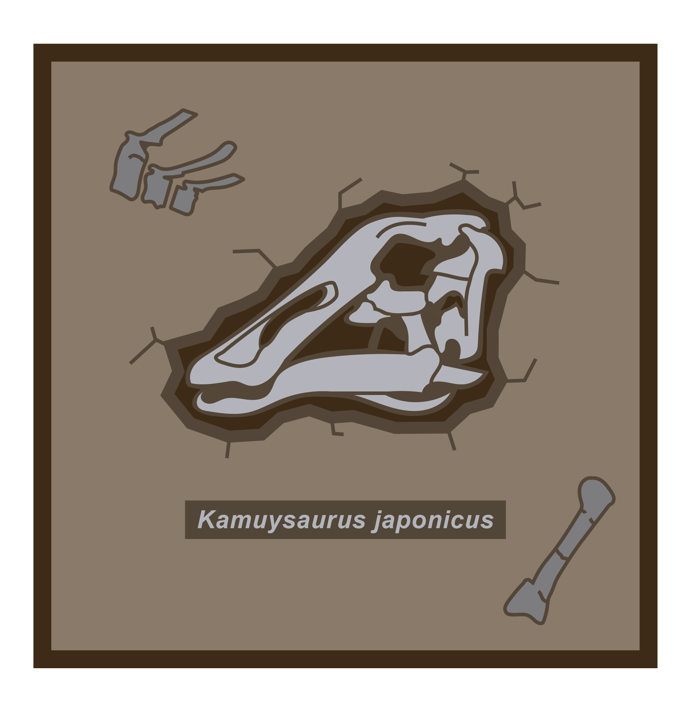
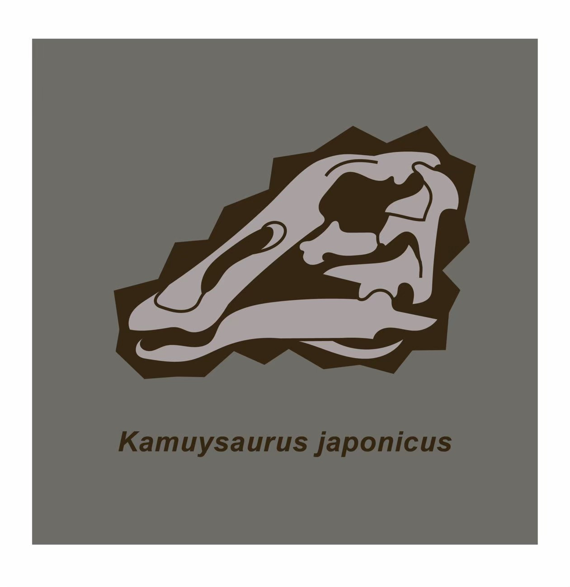
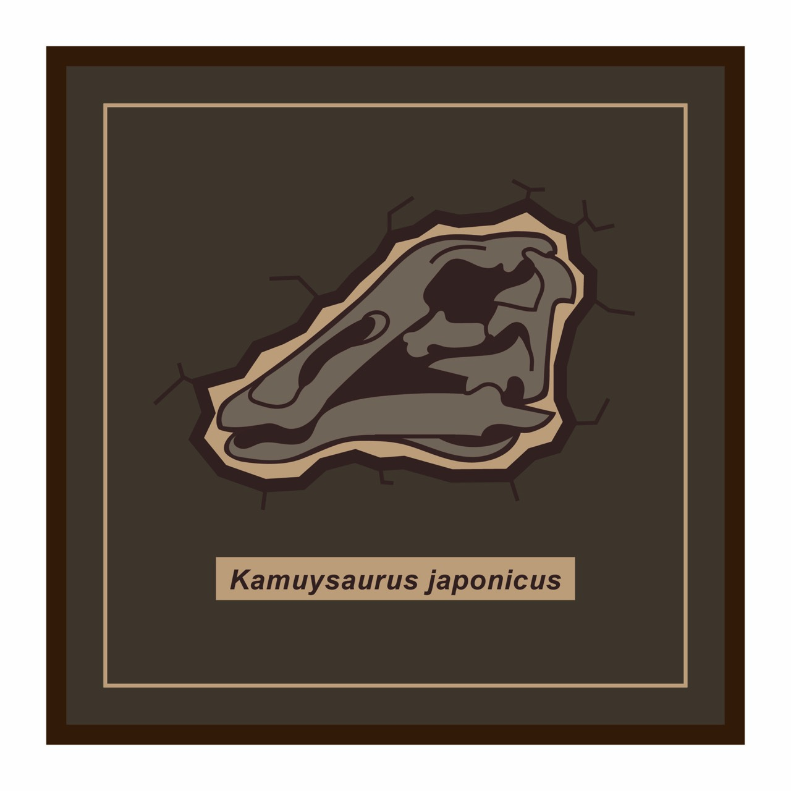
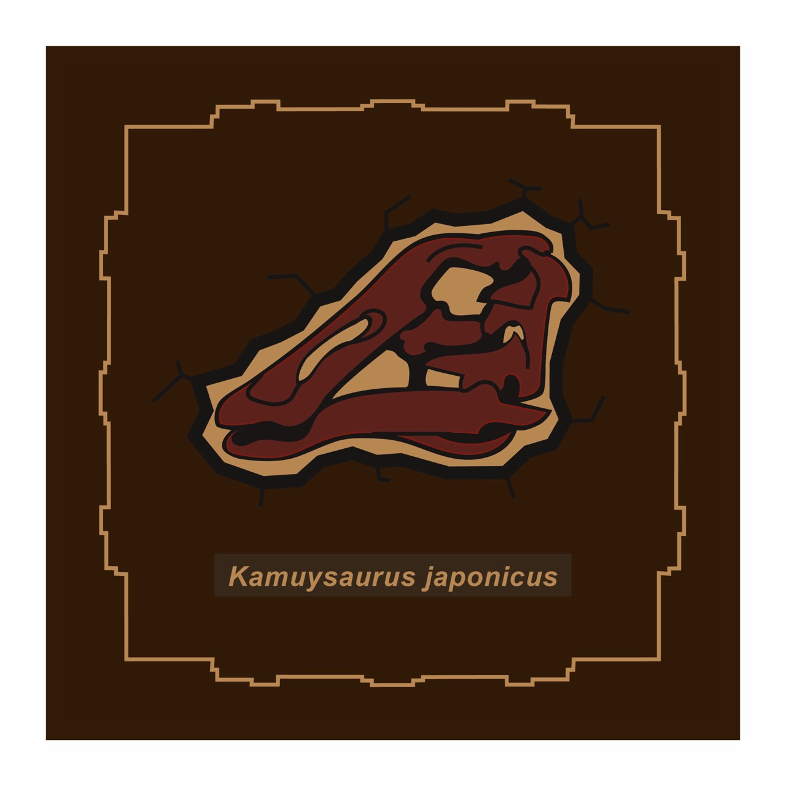
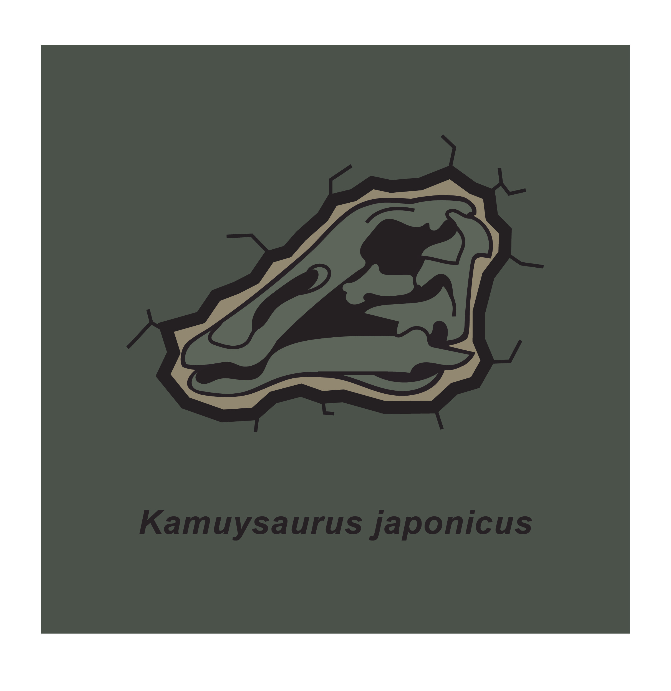
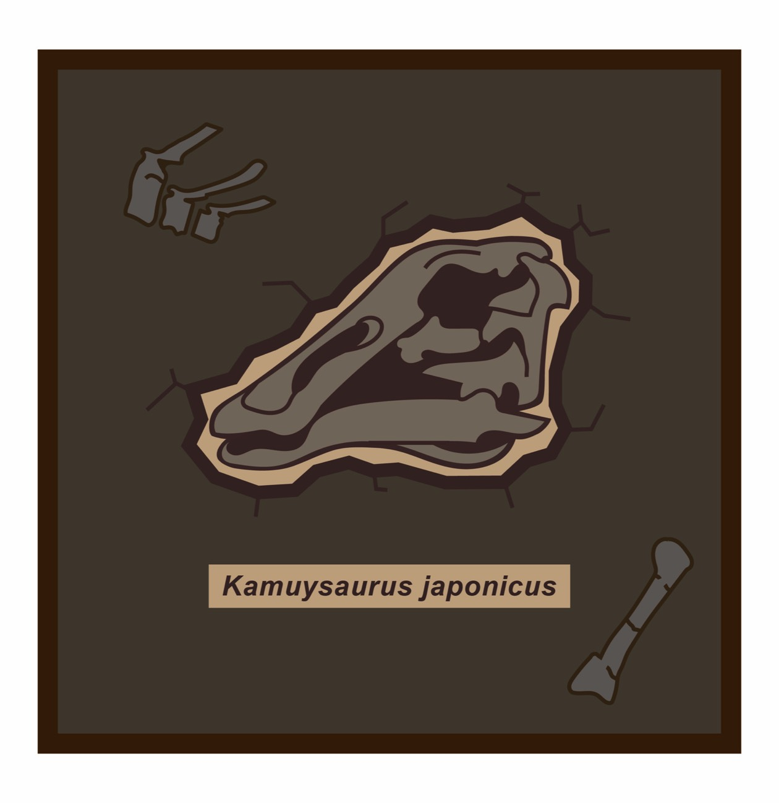

Kamuysaurus japonicus
北海道で発見された恐竜
カムイサウルスは北海道むかわ町で発見された恐竜です。 2013年から2014年にかけて本格的な発掘が行われ、2019年に新属新種の恐竜として報告されました。
カムイサウルスはハドロサウルス科というグループに属します。 また、当博物館で展示されているニッポノサウルスもこのグループに属します。
（1）下の『pdf解説』を押すと詳細な説明が閲覧できます。
また、ダウンロード＆印刷もできますので、必要に応じてお使いください。
（2）コースターと同じデザインの画像を下の限定コンテンツからダウンロード可能です。
携帯電話やパソコンなどの壁紙としてお使いください。
※1 画像が読み込めない、または出てこない場合は、
Windowsでは「Ctrl + F5」（Macでは 「Command + R」）を同時に押してみてください。
※2 携帯電話の場合は更新ボタンを押すことをお試しください。
※3 それでも改善されない場合は、キャッシュをクリアしてください。
（Googleの場合：Windows：Ctrl + Shift + Delete、Mac：command + shift + deleteで消去ができます。）
制作
2025年度 北海道大学大学院
理学院専門科目・大学院共通科目 博物館コミュニケーション特論 北大生企画グッズ
コースターデザイン：菅遥人
解説書シートPDF作成：城川響生
Webページ作成：大橋志音
Webページ構成提案：鎌田歩果
監修：小林快次（総合博物館）
指導：北野一平・湯浅万紀子・中澤祐一（総合博物館）
購入者さま限定コンテンツ
試作デザイン展示館 ～BACKYARD OF HOKUDAI MUSEUM～
ここでは、特典としてコースターを作るうえで、いくつか生み出したデザイン案がありましたので、それらをここに設置します。
下のボタンを押すと、実際にコースターに採用されたデザイン1種類と、試作品デザイン案10種類の合計11種類の画像をまとめて、ダウンロードします。
ダウンロードしたフォルダは、zipファイルとなっております。各デバイスによって、解凍（展開）の方法が違うので、お使いのデバイスの指示に従ってください。
※ボタンを押すと、フォルダ『Kamuysaurus_10.zip』をダウンロードします。中身にはjpgファイルが入っており、ファイル名はそれぞれ、『image2-〇〇.jpg』となっていますが、これは下の説明と同じ番号になっています。
（image2-01.jpgは下の説明のプロトタイプ2-01と対応、image2-02.jpgは下の説明のプロトタイプ2-02と対応...のようになっています。）
なお、zipフォルダの中にある、image2-00.jpgはお買い求めいただいたコースターのデザインとなっています。
画像1セット（10枚）を
ダウンロードする
1.パソコンの場合
（1）ダウンロードした場所に移動し、フォルダ『Kamuysaurus_10.zip』を選択して右クリックするとメニューが開きます。（2）すべて展開（または解凍するなどの項目が出てくる）を選択します。
（3）展開するかどうか、どこに展開する（特に何も設定しなければ、はじめにzipファイルをダウンロードした場所）か確認画面がでるので、展開を選択します。
（4）それぞれの画像の閲覧・利用できます。
2.スマホ（android）の場合
（1）「Files by Google」（または「ファイル」アプリ）を開きます。（2）「ダウンロード」フォルダを開き、『Kamuysaurus_10.zip』をタップします。
（3） ポップアップが表示されたら「解凍」をタップします。
（4）解凍が終わると、最初にダウンロードしたzipファイルと同じ場所に展開したものが出現します。
（5）それぞれの画像の閲覧・利用ができます。
3.スマホ（iPhone）の場合
（1）「ファイル」アプリを開きます。（2） ダウンロードしたフォルダ（「ダウンロード」など）に移動し、『Kamuysaurus_10.zip』をタップします。
（3）自動的に新しいフォルダが作成され、解凍されます。
（4）それぞれの画像の閲覧・利用ができます。
☆試作品デザインリスト☆
※各サンプル画像について、1番上がプロトタイプの番号が1番若いものに対応しています。
（上から2-01,2-02,2-03,...,3期の一番下の試作品が2-09です。）



【1期試作品】
プロトタイプ2-01
「黒・茶色バージョン」
プロトタイプ2-02
「グレー＆白色バージョン」
プロトタイプ2-03
「グレー＆＆茶色バージョン（青系グラデーションつき）」
初期試作品は3種類生み出されました。
コースターに採用したデザインより、カムイサウルスの頭が、一回り大きめになっています。
一番上は、配色は背景が黒、カムイサウルスの頭の部分はうすい茶色と濃い茶色の2色で構成されていて、落ち着きのあるデザインです。
中段は、 配色は背景がグレー（石や岩を表現）、カムイサウルスの頭の部分は白色（白色を使うことで、骨を表現）にしています。
この色の組み合わせにすることで、実際にたった今、化石が発掘されたような雰囲気の演出を出しています。
一番下のものは、グラデーション加工にして、化石が光っているような演出を出しました。
アンモナイトのほうでもグラデーションバージョンがありましたが、色を異なるものにしたかったので、対照的（赤色と青色）にしています。
また、学名部分は真ん中の種類とは異なり、字体が筆記体風になっています。



【2期試作品】
プロトタイプ2-04
「茶色系統バージョン」
プロトタイプ2-05
「茶色＆黒色バージョン」
プロトタイプ2-06
「赤めの茶色バージョン」
上の1期試作品3種類を改良したものたちです。
第1期のデザインと比べると、学名部分を四角で囲み、化石部分にヒビを入れています！
こうすることで、博物館の展示物の見ためを目指しました。
さらに、第2期と第3期の試作品では、コースタの端の部分にも色を加えています！
真ん中のものは2-04のデザインとほぼ同じですが、よくみるとカムイサウルスの頭部の内側が薄い茶色から黒に変更したものになっています。
下段のものは、上の2つとは異なり、配色を赤系統の茶色をつかって、明るいデザインの配色をベースとして、砂漠系のような乾燥している場所を表現しました。
また、外枠の線は正方形ではなく、いびつな形になっていますが、こちらもアンモナイトのプロトタイプ1-07と同様、当博物館の外観を4つ組み合わせたものとなっています。



【3期試作品】
プロトタイプ2-07
「2-05改良バージョン1」
プロトタイプ2-08
「2-05改良バージョン2」
プロトタイプ2-09
「2-05改良バージョン3」
第2期の真ん中のデザインをもとに、この3種類のデザインが生まれました。
この第3期のデザインが販売品にいちばん近いものになっています。
第2期では枠線をいれましたが、シンプルさを向上させたほうが良いかと判断し、第3期ではそれを取り払いました。
それによって、カムイサウルスのデザインに注目しやすいようにしています。
また、中段と下段のデザインは、化石がザクザク出てくる表現を入れたかったので、カムイサウルスの頭のほかにも小さい化石を足しています。
以前のデザインと比べて、より充実したコースターデザインを狙いました。
これら2つは背景の色に違いあります。
黒色から薄い茶色へ変更することで、より本物の土や岩から化石を発掘しているという場面を表現しています。
実際のコースターでは、この下段(2-09)のデザインをすこし改良した（カムイサウルスの頭の中央部の骨格が手直しされました）ものが採用されています。